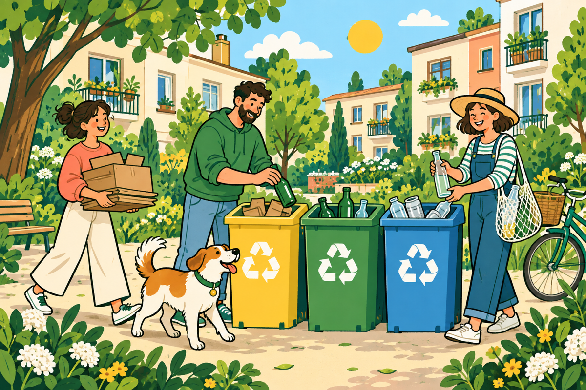

МАЛЕНЬКАЯ, НО С ХАРАКТЕРОМ
Одна батарейка.
Большой след.
«400 л воды» — популярная оценка загрязнения, а не универсальная норма. Реальный вред зависит от состава и условий. Батарейке нужен отдельный сбор.
БОЛЬШИЕ ПЕРЕМЕНЫ НАЧИНАЮТСЯ ВО ДВОРЕ
Один двор. Одна привычка.
Одна планета.
Без суперсил. Без идеальности. Вместе.

Хорошие привычки заразительны. Проверим?01 / ДАВАЙТЕ РАЗБЕРЁМСЯ
Мусоровоз уехал. А мусор — не исчез.
У вещей в общем баке часто слишком
долгая и совсем не весёлая история.
МАЛЕНЬКАЯ, НО С ХАРАКТЕРОМ
«400 л воды» — популярная оценка загрязнения, а не универсальная норма. Реальный вред зависит от состава и условий. Батарейке нужен отдельный сбор.
ЗАДЕРЖАЛАСЬ НА ВЕЧЕРИНКЕ
Столько может длиться история пластиковой бутылки в природе. Пять минут в руках — и целые поколения после.
*Ориентировочная оценка для морской среды, а не точный срок.СВАЛКА НЕ СПИТ
Органика на полигоне выделяет метан. Ртутьсодержащие лампы при повреждении могут высвобождать ртуть. У разных отходов — разные маршруты.
02 / МЫ БОЛЬШЕ, ЧЕМ КАЖЕТСЯ
По отдельности — одна коробка.
Вместе — совсем другая история.
Если направлять на переработку половину,
это 187,5 кг в день вне общего мусорного потока.
«Кто-нибудь разберётся»
«Мы уже разобрались»
03 / У ВЕЩЕЙ ЕСТЬ ПРОДОЛЖЕНИЕ
Это не магия. Это переработка.
Выберите материал и посмотрите,
кем он может стать, когда вырастет.
Из чистого PET получают волокно для тканей и наполнителей.
Возможные примеры новой жизни. Принимаемые материалы и технологии зависят от вашего города.
04 / ТВОЯ ЛИЧНАЯ ПИРАМИДА
Не нужно становиться экспертом за день.
Сначала обязательное. Потом простое.
Дальше — по силам.
Маленький шаг тоже считается ✳
Старт здесь: опасное собираем отдельно.
У каждой категории — свой специальный пункт приёма.
05 / ОТ «НАДО БЫ» К «УЖЕ ДЕЛАЮ»
Семь ступеней. Свой темп. Никаких экзаменов.
Выдели для использованных батареек отдельную неметаллическую ёмкость. Храни её в сухом месте, вне доступа детей. У литиевых батареек изолируй контакты скотчем. Повреждённые аккумуляторы не складывай вместе с остальными — уточни у специального пункта, как их передать.
Лампы и лекарства тоже отдельно: ртутьсодержащие лампы сохраняй целыми в защитной упаковке. Для просроченных лекарств уточни местную программу приёма; не смывай их в канализацию. Обычный бак для вторсырья для них не подходит.
Найти пункт на карте ↗Перед поездкой проверь актуальность и правила приёма.Поставь небольшую коробку для чистых крышечек. Посмотри, какие маркировки принимает выбранная акция: обычно это 2 (HDPE) и 5 (PP), но правила различаются. Маленькая коллекция с большим смыслом.
Чистые сухие коробки расправь и сложи стопкой. Удали остатки еды. Жирную часть коробки от пиццы не смешивай с макулатурой. Картон любит компактность — почти как кот.
Опустоши бутылки и банки, при необходимости быстро ополосни. Проверь требования к крышкам. Керамика, зеркала и лампочки — не тарное стекло, их не добавляем.
Найди цифру в треугольнике на упаковке и сверь её со списком пункта приёма: знак сам по себе не гарантирует переработку. Упаковку опустоши, подготовь по правилам пункта. Жестяные банки собирай без остатков еды.
Предложи в чате дома совместный поход к пункту приёма. Делись адресом и временем, а не чувством вины. Общий сбор в подъезде сначала согласуй с управляющей организацией.
Пропустил неделю? Начни снова. Нет пункта для одного материала? Сдавай тот, для которого есть. Сортировка — привычка, а не соревнование на звание идеального землянина.
ХОРОШЕЕ НАЧИНАЕТСЯ С НАС
Лучше сделать 20%, чем 0%.
Сегодня батарейка. Завтра — новый обычай дома.
План на первый день. Без регистрации.